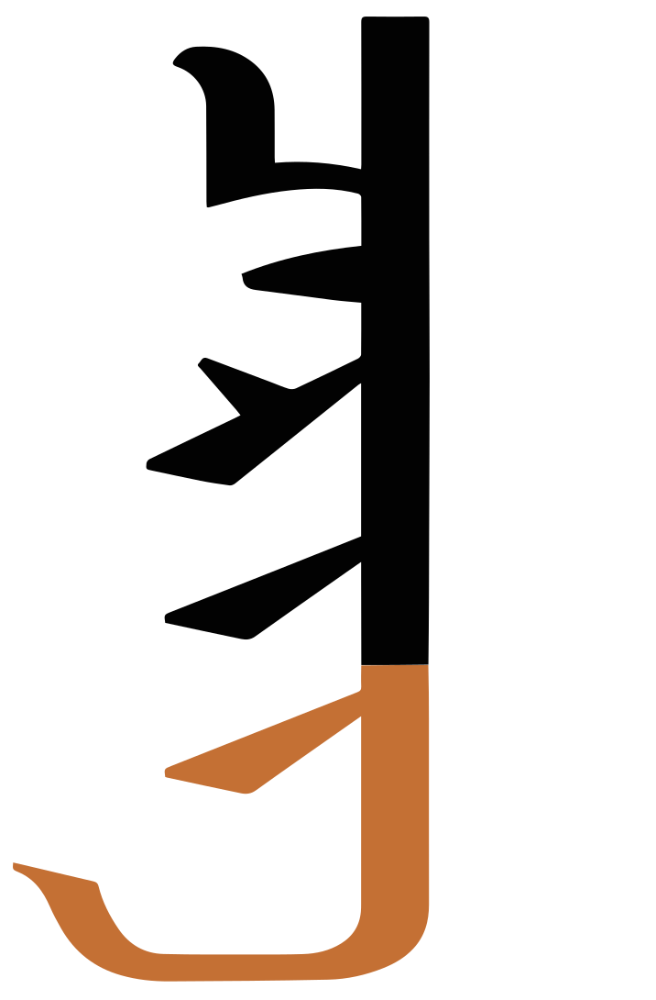
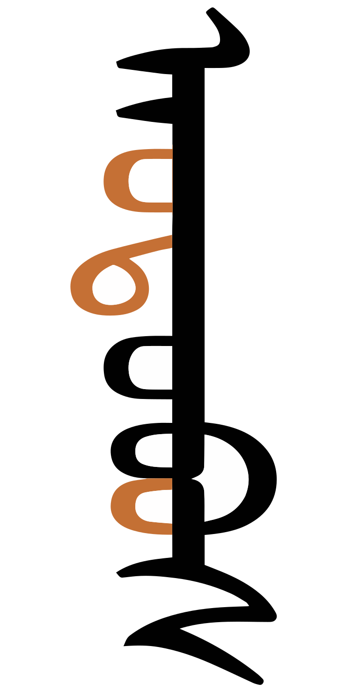
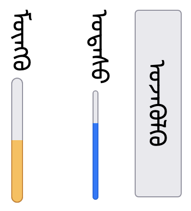

This page brings together basic information about the Mongolian (Hudum) script and its use for the Mongolian language. It aims to provide a brief, descriptive summary of the modern, printed orthography and typographic features, and to advise how to write Mongolian using Unicode.
It can be quite difficult at times for novices to identify characters in a string of cursive Mongolian text. Clicking on the orange-coloured examples below can help a lot by opening a panel which matches the code points and sounds to the visible graphemes. In the panel, the word is split into segments approximating grapheme clusters; above it is a transliteration; below is the pronunciation in IPA.
The Mongolian script is used for writing the Mongolian language. In the Mongolian People's Republic (Outer Mongolia), the traditional script was replaced by a Cyrillic orthography since the early 1940s, but revived in the 1990s, so that both scripts are now used in tandem. The script is also used within the Inner Mongolia Autonomous Region of the People’s Republic of China and elsewhere in China.
The traditional writing for Mongolian is known as Hudum Mongol bichig, and was adapted from the Old Uighur alphabet during the reign of Genghis Khan in the 13th century.
There are four other scripts which are derived from and closely related to Mongolian. These are the Galik, Todo (or "clear script"), Manchu and Sibe scripts.
The Mongolian script is an alphabet, ie. a writing system in which both consonants and vowels are indicated. See the table to the right for a brief overview of features for the modern Halh Mongolian orthography.
Modern Mongolian can be written using a subset of the letters available in the Mongolian Unicode block. The remainder are used for writing Todo, Sibe, and Manchu, or for writing foriegn words, especially in Tibetan and Sanskrit.
Mongolian text runs top to bottom in vertical lines and (unusually) the lines flow left to right.
The script is cursive, ie. letters in a word are joined. All letters join both on the left and right.
Words are separated by spaces, but also contain narrow spaces that precede suffixes and may produce shaping differences to the surrounding letters. These are part of the word, and the parts on either side should not be separated.
Traditional Mongolian is an alphabet where vowels are written using 8 vowel letters, including one for foreign sounds.
Mongolian has separate code points for each sound in Mongolian, but many of these look indistinguishable from each other when rendered. This creates difficulties for novices to reproduce Mongolian text without access to the source..
Vowel reduction is a significant feature of Mongolian. Non-initial short vowels are reduced to vestiges or to zero, and non-initial long vowels in the orthography are reduced to short vowel length.
Vowel harmony is another key feature, grouping vowels in a way that indicates a front or back position for the tongue root (ATR).
Click on the sounds to reveal locations in this document where they are mentioned.
Phones in a lighter colour are non-native or allophones. Source Wikipedia.
Vowel sounds
Plain vowels
Diphthongs
A significant feature of Mongolian phonology is that vowel sounds are divided into front (+ATR), back (-ATR), and neutral groups (see harmony). The front and back distinction has to do with the position of the tongue root (ATR means Advanced Tongue Root). The phonology is more complicated, and sounds are somewhat more fluid than described here. See the sources for more detailed information.
In non-stressed positions, most vowels fall back to ə or are elided. See diglossia.
Consonant sounds
labial
dental
alveolar
post-
alveolar
palatal
velar
uvular
glottal
stops
p
t
ɡ
ɢ
aspirated
pʰ
tʰ
kʰ
palatalised
pʲ
tʲ
ɡʲ
aspirated & palatalised
pʲʰ
tʲʰ
kʲʰ
affricates
t͡s
t͡ʃ
aspirated
t͡sʰ
t͡ʃʰ
fricatives
f
s ɮ
ʃ
x
palatalised
ɮʲ
xʲ
nasals
m
n
ŋ
palatalised
mʲ
nʲ
approximants
w
j
palatalised
wʲ
j
Some phonological transcriptions use t and tʰ where others use d and t for the same sounds, respectively. Similar contrasts are applied to the bilabial and affricate pairs in the repertoire (but not to the k/g pairing). Here we use the former, because that is what Wiktionary uses for the IPA transcriptions included in the examples.
Palatalisation appears to be restricted to words containing -ATR (back) vowelswl,#Consonants.
Tone
Mongolian is not a tonal language.
Structure
Prefixes and suffixes
The basic unit of text is a word, however words can contain prefixes and suffixes. Some of the suffixes are separated from the root of the word by a small gap, but they are still considered to be part of the word. See suffixes and mvs for more details.
Vowel harmony
Vowel harmony is an important aspect of the Mongolian language – words contain only back+neutral vowels, or only front+neutral vowels. Foreign loan words don't follow this pattern, and compound words (especially place names) may be made up of two words of different type.
Back vowels are sometimes called 'masculine' or ATR- vowels, and front vowels 'feminine' or ATR+ vowels.
The back vowels are:
ᠠ␣ᠣ␣ᠤ
The front vowels are:
ᠡ␣ᠥ␣ᠦ
The following vowel is neutral, and can appear in words with either back or front vowels.
ᠢ
Grammatical suffixes also differ according to whether the vowels are back or front types.
Spelling vs. pronunciation
Mongolian words can be written in a way that looks significantly different from the actual pronunciation. Two factors, in particular, play a role here: (1) vowel stress and reduction, and (2) traditional vs. modern pronunciations.
Vowel reduction is a significant feature of Mongolian pronunciation. Non-initial short vowels are reduced to vestiges or to zero, and non-initial long vowels in the orthography are reduced to short vowel length.
ᠴᠠᠰᠤ
ᠴᠢᠬᠢ
Word stress always falls on the first syllable of a Mongolian word, unless there are long vowels or diphthongs later in the word, in which case those take the stress.
The first vowel in a word is never reduced, even if unstressed, eg.
ᠴᠠᠭᠳᠠᠭᠠ
ᠤᠯᠠᠭᠠᠨ
If there is more than one long vowel, the first long vowel is long, and the second is short, but not otherwise reduced, eg.
ᠤᠯᠠᠭᠠᠨᠪᠠᠭᠠᠲᠤᠷ
Different rules apply to foreign loan words, eg.
ᠠᠦ᠋ᠲ᠋ᠣᠪᠦ᠋ᠰ
ᠮᠠᠱᠢᠨ
Written Mongolian words also use traditional spellings that may not correspond closely to modern pronunciations. For example, the following word is spelled pajarlalʊɢa, but pronounced pajərɮa.
ᠪᠠᠶᠠᠷᠯᠠᠯᠤᠭᠠ
It is particularly common to drop the sound of
ᠭ [U+182D MONGOLIAN LETTER GA]
and convert it and the surrounding vowels to a single long vowel sound. For example, click on the following words to see the elided characters:
ᠬᠠᠭᠠᠨ
ᠤᠤᠭᠤᠬᠤ
Sometimes vowels appear to move to places they are not in the orthography during the reduction process. The following word is spelled uʤəgulxu, whereas the modern pronunciation is ut͡suːləx.
ᠤᠵᠡᠭᠦᠯᠬᠦ
For non-stressed, non-initial syllables, some sources group consonants into those which need to be preceded or followed by a vowel:
ᠮ␣ᠨ␣ᠭ␣ᠯ␣ᠪ␣ᠸ␣ᠷ
And those which don't:
ᠳ␣ᠵ␣ᠽ␣ᠰ␣ᠲ␣ᠬ␣ᠼ␣ᠴ␣ᠱ
However, Mongolian pronunciation can still appear to be very different from the written text because unstressed vowels are typically reduced or omitted when a word is pronounced, eg.
Vowels
This orthography has no special features with respect to the following.
The following table summarises the main vowel to character assigments.
These are nominal pronunciations that don't take into account vowel harmony or vowel reduction. Also, nominal shapes are shown; in practise, the shape will vary according to the joining context.
As previously mentioned, vowel harmony is an important part of the orthography for the Mongolian language, and most of these vowels consist of contrasting pairs.
Vowels for other languages
In addition to the set of Mongolian vowels, the Mongolian block also includes additional vowel characters for use with Todo, Sibe, Manchu and Ali Gali vowels.
Todo
ᡃ␣ᡄ␣ᡅ␣ᡆ␣ᡇ␣ᡈ␣ᡉ
Sibe
ᡝ␣ᡞ␣ᡟ␣ᡠ␣ᡡ
Manchu
ᡳ
Ali gali
ᢇ␣ᢈ
Glyphs vs. phonemes
Unicode encodes separate characters for the different sounds of the Mongolian language, regardless of whether the glyph shapes used are identical.
Initial, medial and final forms for characters representing ɔ, ʊ, o, and u, respectively.
Identical glyphs for different sounds occur across other pairings also. For example, the medial and final shapes for a and n are identical.
Initial, medial and final forms for characters representing a, and n, respectively.
The Unicode Standard provides the following examples of word pairs that cannot be distinguished visually.u,530
Click on 'details', and then on each of the words to see and compare their actual composition.
These 2 word pairs are confusable in Mongolian.show composition: ᠤᠷᠲᠤ
ᠤᠷᠲᠤ
show composition: ᠣᠷᠳᠤ
ᠣᠷᠳᠤ
show composition: ᠡᠨᠳᠡ
ᠡᠨᠳᠡ
show composition: ᠠᠳᠠ
ᠠᠳᠠ
The result of this encoding method is that it is impossible to accurately copy Mongolian text from a visual source unless you speak the language well enough to recognise the phonetics of the words involved. It also leads to mistakes when Mongolian speakers type text.
Final vowel separation
In some Mongolian words that end with ᠠ[U+1820 MONGOLIAN LETTER A] or ᠡ[U+1821 MONGOLIAN LETTER E] a special 'forward tail' glyph shape is used, and the glyph is slightly separated from the rest of the word (see fig_mvs). The shape of the previous letter may also change, when this occurs, depending on the letter and sometimes whether this is a traditional or modern orthography. Whether this special shaping is applied or not depends on the word – there are no rules to determine when to apply it.
The final letter is not a suffix, but is an integral part of the word, and line breaking, word selection, etc. should not split the start of the word from the last letter, even though there is a gap.
To achieve this effect in Unicode, it is currently necessary to use
[U+180E MONGOLIAN VOWEL SEPARATOR]
immediately before the last letter.
Click on the text in fig_mvs to see the sequence of characters.
The same sequence of characters with MVS before the last letter (left), and without (right).show composition: ᠬᠠᠨᠠ
ᠬᠠᠨᠠ
show composition: ᠬᠠᠨᠠ
ᠬᠠᠨᠠ
Not used for Todo, Manchu or Sibe.
Standalone vowels
tbd
Vowel length
tbd
Vowel absence
tbd
Consonants
This orthography has no special features with respect to the following.
Conjuncts or other shaping related to consonant clusters.
Consonant summary table
The following table summarises the main consonant to character assigments.
Nominal shapes are shown; in practise, the shape will vary according to the joining context. The finals shown are just a few that are dedicated finals, or whose pronunciation changes when syllable-final.
The Mongolian language has a basic set of 16 consonants.
ᠪ␣ᠫ␣ᠳ␣ᠲᠴ␣ᠵᠰ␣ᠱ␣ᠬ␣ᠭᠨ␣ᠩ␣ᠮᠷ␣ᠯ␣ᠶ
Glyph shaping
Each Mongolian letter tends to have multiple shapes, and the differences in glyph shape not solely dependent on the cursive interactions, as is the case in Arabic.
The choice of shape often depends on whether the letter is used in syllable-initial or syllable-final position. But there are typically differences between the shape used for a syllable-initial letter at the beginning of a word, and one that occurs within a word. A similar situation applies for syllable-final shaping: is the letter followed by more letters, or word final?
Furthermore, a particular shape may be used before an MVS space, or after a NNBSP gap. All of this shaping should normally be handled automatically during the rendering process.
On the other hand, there are sometimes other, unpredictable changes in shape for letters in certain words. In this case, the content author needs to add an appropriate Free Variation Selector (FVS) formatting character after the letter to be shaped. See context.
QA and GA
In the current Mongolian encoding model, the code points
ᠬ [U+182C MONGOLIAN LETTER QA]
and
ᠭ [U+182D MONGOLIAN LETTER GA]
each have both masculine and feminine forms. The different forms have different shapes and different pronunciations.
The masculine form is used before a masculine vowel, and vice versa.
masculine
feminine
masculine
feminine
initial
medial
Initial and medial forms for QA and GA followed by masculine then feminine vowels.
The font is expected to automatically select the appropriate glyph form for these velar consonants. This becomes more complicated, however, where these consonants occur without a following vowel (ie. before another consonant, or in final position).
In Sibe and Manchu, the form is selected based on the previous vowel. In Mongolian and Todo, however, the shape depends on the gender of the word, as described in harmony, and this may not be detectable from the previous vowel. The Unicode Standard gives examples of 2 words where it is necessary to look at the beginning of the word to determine the shape at the end of the word.u,534

The words ʤarlig and čerig, showing different forms of the final letter GA.show composition: ᠵᠠᠷᠯᠢᠭ
ᠵᠠᠷᠯᠢᠭ
show composition: ᠴᠡᠷᠢᠭ
ᠴᠡᠷᠢᠭ
This puts a significant strain on the capabilities of the font itself and of the font developers, and some fonts do not achieve this correctly. In addition, exceptional circumstances have to be taken into account. In consequence, fonts may need 100 or more rules to handle this.
Suffixes
Many Mongolian suffixes are separated from the root or other suffixes by a small gap. Multiple suffixes may be attached to the word stem, each with their own initial gap. Characters following immediately following the gap may take on special shapes.
ᠵᠠᠷᠢᠮ ᠳᠠᠭᠠᠨ
Lines and word selections, etc. should not be broken where the gaps appear. The word and its suffixes should be kept together.
The Unicode Standard provides
[U+202F NARROW NO-BREAK SPACE]
(NNBSP) for this gap, which is thinner than a normal space, and prevents line-breaking. Fonts and rendering should automatically perform any special glyph shaping needed for the initial letter in the suffix.
Repertoire extension
The full set of consonants used for Mongolian includes 11 letters that are normally used for writing foreign sounds.
ᠸ␣ᠹ␣ᠺ␣ᠻ␣ᠼ␣ᠽ␣ᠾ␣ᠿ␣ᡀ␣ᡁ␣ᡂ
See a couple of examples below, but click on the items in the above list to see more.
Because the script is alphabetic, there are no special mechanisms for representing clusters of consonants without intervening vowels, or doubled consonants.
Consonant length
No special mechanisms for representing doubled consonants
Other features
Combining marks
The Mongolian block contains 3 visible combining characters.
ᢅ␣ᢆ␣ᢩ
It also contains 3 invisible control characters, also classed by Unicode as combining characters, which can be used to indicate specific alternative forms for letters. See Context-based shaping.
Numbers
Mongolian often uses ASCII digits, however there is a set of Mongolian digits.
᠐␣᠑␣᠒␣᠓␣᠔␣᠕␣᠖␣᠗␣᠘␣᠙
Traditionally, Mongolian digits run horizontally within the vertical lines, but it is common in modern text for them to run down the line instead.u
Digits arranged so they run down the line (left) and across the line (right).
Text direction
Mongolian script is written vertically, top to bottom, in columns that flow left to right. This is an unusual configuration. (Chinese, Japanese and Korean vertical text columns are read right to left). It derives from the fact that this script descended from a script (Old Uyghur) that was written right to left.
Fullwidth Latin alphabetic and digit characters are seen in traditional Mongolian text, as are fullwidth Chinese characters and punctuation (see mixed_text). When used, the latter are displayed upright. The fullwidth series of Unicode characters may be used as an easy way to achieve this.g5
Mixed Mongolian and Chinese text. (Click on the image to see larger.)
Cyrillic characters may also be seen, used in a way that resembles fullwidth characters, but this is actually a property of the font used to display the characters, since there are no fullwidth cyrillic code points in Unicode. Emoji are also expected to be displayed upright.g5
Non-fullwidth letters and numbers tend to be written sideways.g5 See mixed_text_sideways.
Sideways Latin text and numbers in vertical Mongolian.
Upright digits may be used for list counters. And Mongolian also has the feature referred to in Japanese as tate chu yoko, whereby small sequences of non-fullwidth numbers or punctuation may run horizontally within the vertical flow.g5 See fig_digits_tate_chu_yoko.
Certain punctuation marks are upright, and others are rotated.g5 (See inline.)
Many of the conventions seen in actual digital text may be determined more by the available technology than by what the content author wants to achieve.g5
When Mongolian excerpts are shown in text that is set horizontally (such as on this page), the Mongolian is sometimes represented as a sequence of single vertical words, eg. ᠮᠣᠩᠤᠯ ᠪᠢᠴᠢᠭ, but in other cases it is rotated left and joins horizontally, eg. ᠮᠣᠩᠤᠯ ᠪᠢᠴᠢᠭ.
Mongolian text written horizontally is read left-to-right. This means that if it contains embedded text from another language, such as English, there is no bidirectional behaviour (as there would be in Arabic-script text).
Note also that it is not possible to produce a page of vertical text by printing it horizontally and then rotating the page, This is because the order of lines in the rotated page will be right-to-left, whereas it should be left-to-right.
Glyph shaping & positioning
The following features are not found in this orthography.
Case distinction, or special transforms to convert between characters.
This section brings together information about the following topics:
font/writing styles;
cursive text;
context-based shaping;
context-based positioning;
letterform slopes, weights, & italics;
case & other character transforms.
Most of the complexity of the Mongolian traditional script has to do with two things: (1) characters are allocated on the basis of phonemic differences, but many characters share identical shapes, and (2) there are many variant forms for a given character, some of which cannot be produced automatically.
Cursive shaping
Similarly to the Arabic script, Mongolian letters within a word tend to be joined cursively along the centre baseline, and the shapes of joined characters can vary significantly in various positions. Unlike Arabic, and many other cursive scripts, there are no characters that only join on one side.
Letters following a Mongolian suffix space may need to be displayed using a joining form, however that is not always the case. It depends on the suffix.
The base shape of a letter can change significantly, depending on the position in a word. On the other hand, a number of letters have adopted identical shapes in the same, or sometimes different joining contexts.
Context-based shaping & positioning
Certain letters ligate with adjacent letters.
In addition to the cursive shaping mentioned just above, individual letters may have context-dependent variant forms, that can be quite different from the standard forms. Where the alternative form can be determined algorithmically, the font should produce the change.
An unusual feature of the Mongolian traditional script is that the shape of a letter may depend on the vowel harmony of the word, and so may be determined at some distance from the character in question.
For unpredictable variants, the Mongolian block has three 'free variation selectors' which can be used to indicate which variant form should be used. The variant selector is used immediately after the character to be changed.
᠋␣᠌␣᠍␣᠏

The word for 'bus' (left) contains 3 free variation selectors. The right hand side shows what the word would look like without variation selectors.show composition
ᠠᠦ᠋ᠲ᠋ᠣᠪᠦ᠋ᠰ
Unfortunately, variation selector usage is still not completely standardised across Mongolian fonts. For a set of tables summarising current standardisation proposals and major font support see Mongolian variant forms.
Letterform slopes, weights, & italics
tbd
Graphemes
Grapheme clusters
A grapheme is a user-perceived unit of text. The Unicode Standard uses generalised rules to define 'grapheme clusters', which approximate the likely grapheme boundaries in a writing system.
tbd
Punctuation & inline features
Word boundaries
The concept of 'word' is difficult to define in any language (see What is a word?). Here, a word is a vaguely-defined, but recognisable semantic unit that is typically smaller than a phrase and may comprise one or more syllables.
Question marks and exclamation marks are fullwidth, upright characters (ee an example). Mongolian punctuation is horizontally centred in each vertical line.n,#punctuation_rules
Bracketed text
(␣)␣（␣）␣〔␣〕
Mongolian commonly uses parentheses or brackets to insert parenthetical information into text. Parentheses and brackets may be fullwidth or may not be. They are rotated.g5
Like Chinese and Japanese, Mongolian text uses ruby annotations to express the pronunciation of words for beginners or in ambiguous situations. This is useful in Mongolian because many characters look identical in cursive text.
Annotations are typically written in the Latin script, and run down the right side of the line.g1
Underlines run down the right side of vertical lines of Mongolian text. Lines down the left side are equivalent to overline in English text.n,#h_text_decoration
The side of the vertical line for underlines doesn't change for embedded Latin text. Since Latin text runs down the page, this makes the underline run across the top of the Latin letters. See the red line in text_decoration_mixed.n,#h_text_decoration
Underline in Mongolian text with embedded Latin content.
There are a number of different styles of underlining in use, as shown in underline_styles.g10
Various underline styles in Mongolian text. (Click on the picture to see larger.)
If an underline is styled so that it leaves a gap below spaces that separate words, the underline should not also leave gaps below the narrow spaces used to separate some suffixes from the word root. The desired outcome is that shown here, however implementations may vary.g9
Underlining with gaps doesn't leave a gap between roots and suffixes.
Line & paragraph layout
Line breaking & hyphenation
Line-breaking normally occurs at word boundaries (indicated by spaces). Words are not normally broken, but compound words separated by a hyphen can be broken before the hyphen (see hyphenation, just below).
As in almost all writing systems, certain punctuation characters should not appear at the end or the start of a line. The Unicode line-break properties help applications decide whether a character should appear at the start or end of a line.
The following list gives examples of typical behaviours for some of the characters used in modern Mongolian. Context may affect the behaviour of some of these and other characters.
Click/tap on the characters to show what they are.
« ( 〈 《 〔 should not be the last character on a line.
᠆ the Mongolian hyphen, should also appear at the start of a line, and not the end.
» ) 〉》〕 . , ; ! ? । ॥ % should not begin a new line.
Words are not normally broken across line endings.
However, compound words that contain hyphens may be split at the hyphen@MWG/2-N13,https://www.unicode.org/mwg/mwg2docs/mwg2-13Summaryimprovementstophonetic-RoozbehPournader.pdf. When that happens, however, the hyphen should move to the next line, and should not stay at the end of the current line.u,545
Unicode provides a special Mongolian hyphen for this:
᠆ [U+1806 MONGOLIAN TODO SOFT HYPHEN],
which should produce the correct line wrap behaviour. Despite the name, it is not a formatting character that becomes visible only at line breaks; it is always visible. It is also not specific to Todo.
Text alignment & justification
To justify the text on a line, the spaces between words are adjusted.
When Chinese characters are embedded in Mongolian text and justification applied, space is not added between the Chinese characters (as it would be in a Chinese document).n,#mixed_arrangement_cjk
Space is added around embedded Chinese text during justification, not between.
Text spacing
tbd
This section looks at ways in which spacing is applied between characters over and above that which is introduced during justification.
Baselines, line height, etc.
The default baseline for Mongolian-script text runs down the centre of the vertical line spacing, as shown in centre_baseline.n,#h_text_decoration
The Mongolian baseline runs down the centre of the vertical line.
When mixed with other languages, the text in those languages should also be centre-aligned along the Mongolian baseline.n,#mixed_arrangement_alphanum
Counters, lists, etc.
You can experiment with counter styles using the Counter styles converter. Patterns for using these styles in CSS can be found in Ready-made Counter Styles, and we use the names of those patterns here to refer to the various styles.
The Mongolian orthography uses ASCII and native numeric styles. It also uses fixed styles based on circled numbers.
Numeric
The mongolian numeric style is decimal-based and uses these digits.rmcs
᠐␣᠑␣᠒␣᠓␣᠔␣᠕␣᠖␣᠗␣᠘␣᠙
Examples:
᠑␣᠒␣᠓␣᠔␣᠑᠑␣᠒᠒␣᠓᠓␣᠔᠔␣᠑᠑᠑␣᠒᠒᠒␣᠓᠓᠓␣᠔᠔᠔
Fixed
The circled-decimal fixed style uses these numbers. It is only able to count to 50.
The dotted-decimal fixed style uses these numbers. It is only able to count to 20.
⒈␣⒉␣⒊␣⒋␣⒌␣⒍␣⒎␣⒏␣⒐␣⒑␣⒒␣⒓␣⒔␣⒕␣⒖␣⒗␣⒘␣⒙␣⒚␣⒛
The Baiti and Noto fonts show the first 20 counters for the circled style lie on their side, instead of upright. The Mongolian White font fixes this, but doesn't appear to handle dotted digits above 9.
As list counters, these digits are generally used upright, as shown in fig_circled_counters.g5
List counters rotated. (Click on the image to see larger.)
Styling initials
tbd
Page & book layout
This section is for any features that are specific to Mongolian and that relate to the following topics:
general page layout & progression;
grids & tables;
notes, footnotes, etc;
forms & user interaction;
page numbering, running headers, etc.
General page layout & progression
Generally, book binding is on the left, and pages are turned towards the left, unlike books set vertically in Chinese or Japanese.n,#h_binding
Mongolian books are bound on the left, and pages turn to the left.
Columns run horizontally, rather than vertically as in Western typography.n,#h_columns
Columns run horizontally. (Click on the image to see larger.)
It is common for the default orientation of pages to be landscape, rather than portrait.n,#h_paper_direction
Forms & user interaction
Form controls on Web pages should be rotated 90 degrees clockwise, compared to the form controls for Western languages.9→
The following figures show examples of what is expected. Major browsers don't fully support forms with this orientation at the time of writing.
Text entry form controls.A select control closed (right) and then open while the user makes a choice (left).

Meter, progress, and button elements (right to left).
Page numbering, running headers, etc
Page numbers should be displayed on the upper or lower side of the page.n,#h_page_numbering


 [
[
 [
[